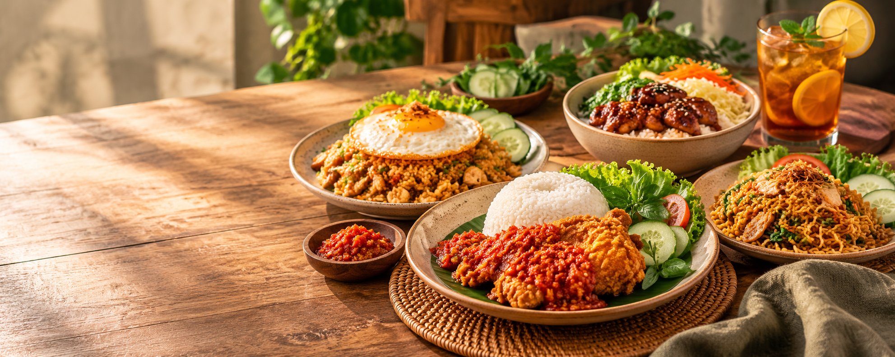

DIBUAT SEGAR SETIAP HARI
Rasa rumahan,
hangat di hati.
Nikmati hidangan favorit dengan rasa yang akrab, bahan pilihan, dan harga yang bersahabat. Karena makanan enak selalu punya cerita.
Rasa yang bikin rinduMenu sederhana, rasa istimewa.

✳Fresh & homemadeDimasak dengan sepenuh hati
ENAK
· JUJUR ·
HANGAT
· JUJUR ·
HANGAT
Bahan pilihanDipilih dengan teliti
Dimasak sepenuh hatiRasa rumahan yang akrab
Harga bersahabatEnak tanpa bikin boros
DARI DAPUR
UNTUK KAMU ♡
UNTUK KAMU ♡
CERITA KAMI
Sederhana bahannya,
istimewa rasanya.
Dapur Nusa adalah konsep UMKM makanan rumahan yang menyajikan menu sehari-hari dengan rasa akrab dan harga bersahabat. Kami percaya, hidangan yang baik bukan harus mewah—yang penting dibuat dengan perhatian.
Yuk, kenalan lebih dekat →